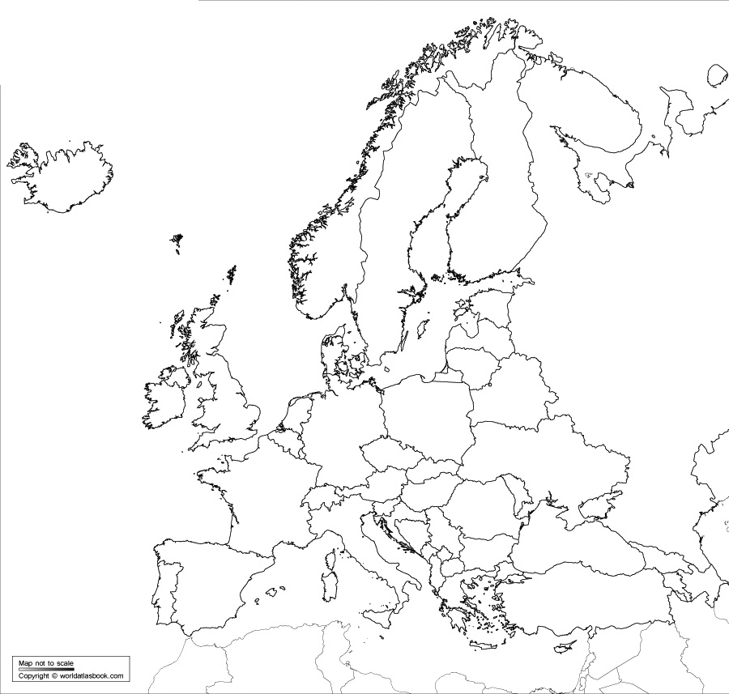
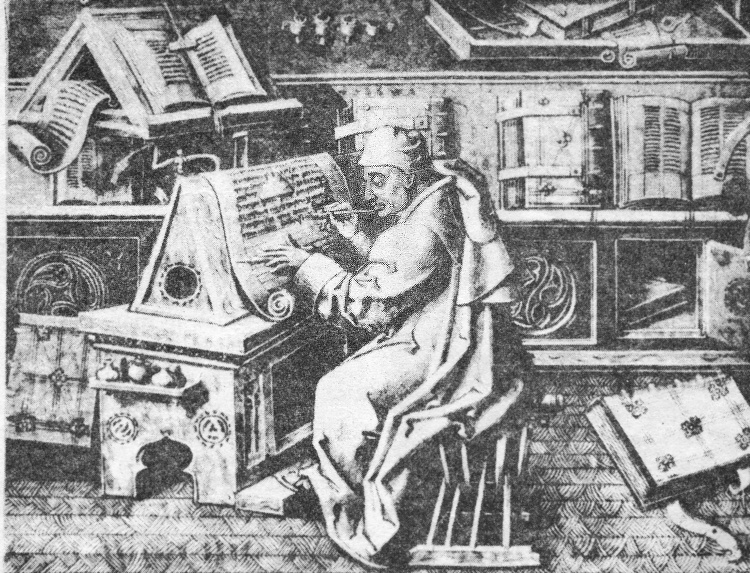
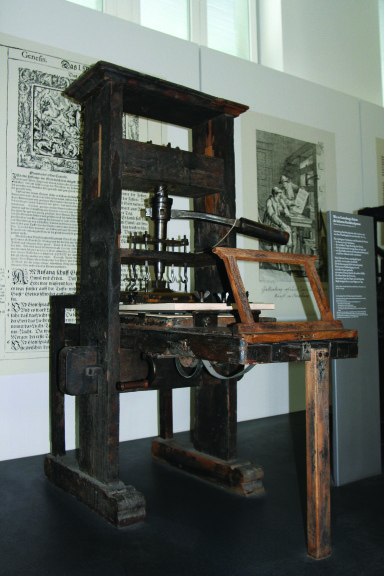
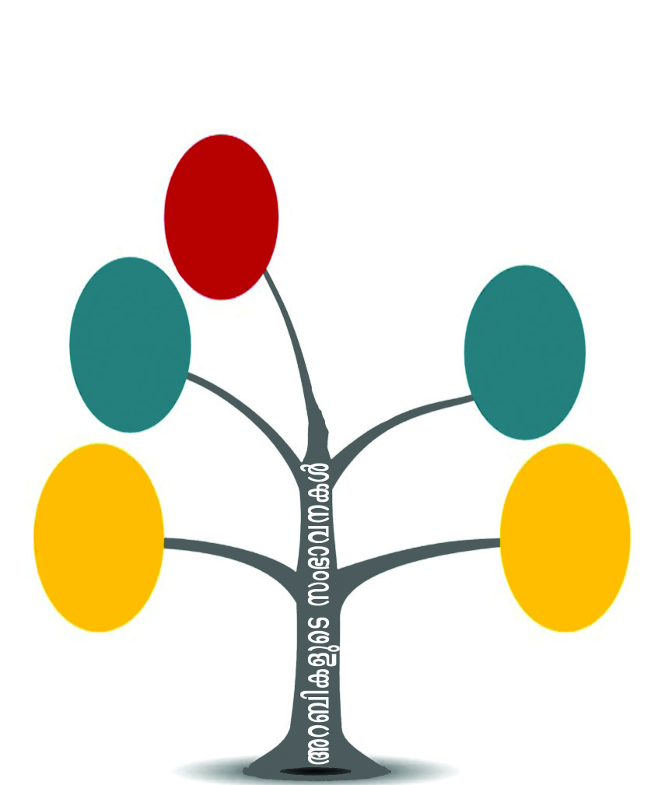
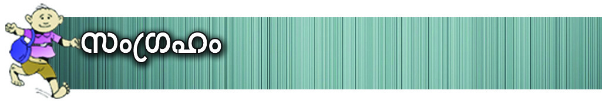
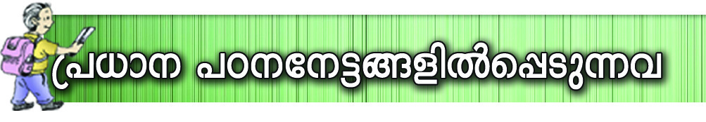
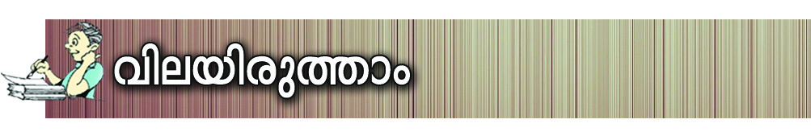
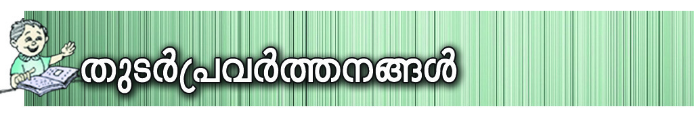

a[y-Ime temIw
Imew kn.C. A©mw \q‰m≠v. bqtdm-∏nse P\-߃ Hmtcm
Znh-khpw `oXntbm-sS-bmWv X≈n-\o-°n-b-Xv. hS-°≥ bqtdm-
∏n¬\n∂p≈ P¿am\nIv h¿K-°m-cpsS \nc-¥-c B{I-a-
W-ßfm-bn-cp-∂p Ah-cpsS `oXn°v ImcWw. Cc-®p-h∂
B{I-a-WImcnIƒ \K-c-߃ sIm≈-b-Sn-°p-Ibpw Bfp-
Isf Iq´-°p-cpXn \S-ØpIbpw sNbvXp. P\-߃ cmPm-
°-∑m-tcmSv k¶-S-ap-W¿Øn-s®-¶nepw Ahcpw \n -lm-b-
cm-bn-cp-∂p.
Ah-km\w cmPm-°-∑m¿ Hcp hgn Is≠-Øn. P\-ß-fpsS
Poh\pw kzØn\pw kwc-£Ww \¬Ip-∂-h¿°v cmPysØ
`qan hoXn®p \¬Ip-sa∂v {]Jym-]n-®p. [oc-∑mcpw bp≤-ho-
c-∑m-cpamb \nc-h[n {]`p-°ƒ P\-ß-fpsS kwc-£-I-cmbn
cwKØp h∂p. {]Xn-^-e-ambn e`n-® -`qan, Xß-tfmSv Iqdp-
]p-e¿Ønbh¿°pw tkh-\-߃ \¬Im≥ Xbm-
dmbh¿°pw Ah¿ hoXn®p \¬In.
Cßs\ `qan e`n-®-h¿ AtX hyh-ÿ-bn¬ a‰p-Nn-e¿°v
`qan ssIam-dn. CØ-c-Øn¬ hnX-cWw sNbvX `qan-bn¬
I¿j-Iscs°m≠v ]I-e-¥n-tbmfw tPmen- sN-øn®p. ASn-a-
IfptS-Xn\p Xpeyam-bn-cp∂p I¿j-I-cpsS PohnXw.
Page 23
Page 24


kmaq-ly-imkv{Xw
120
a[y-Ime temIw
kn.C. A©mw \q‰m-≠p- ap-X¬ ]Xn-\©mw \q‰m-≠p- h-sc-bp≈
bqtdm-∏ns‚ Ncn{XsØ kw_-‘n®v Nne kqN-\-Iƒ \¬Ip-∂-
hnh-cW-amWv apI-fn¬ X∂n-´p-≈-Xv. Cu Ime-L´w temI-N-cn-
{X-Øn¬ a[y-Imew F∂-dn-b-s∏-Sp-∂p. a[y-Ime C¥y-bpsS Ncn-
{X-am-Wt√m ap≥ A[ym-b-ß-fn¬ N¿®sNbvX-Xv. a[y-Ime bqtdm-
∏ns‚ Ncn{Xw kw_-‘n®v Fs¥√mw Imcy-߃ apI-fn¬
\¬Inb hnh-c-W-Øn¬\n∂p a\- n-em°mw?
bqtdm-∏nse P\-߃ \nc-¥cw B{I-a-W-߃ t\cn-´n-cp∂p.
B{I-a-W-ßsf sNdp-°m≥ cwKØp h∂ {]`p-°-∑m¿°v
cmPmhv `qan hoXn®p \¬In-bn-cp-∂p.
Xmsg X∂n-cn-°p∂ Ub-{K-Øn¬\n∂v a[y-Ime bqtdm-]y≥ kaq-
l-Ønse hnhn[ hn`m-K-ßsf ]cn-N-b-s∏-Smw.
cmPmhv
{]`p-°≥am¿
CS-{]-`p-°≥am¿
I¿j-I¿
Cu kaqlØn¬ G‰hpw Db¿∂ ÿm\w cmPm-hn-\m-bn-cp-∂p.
cmPysØ apgp-h≥ `qan-bp-sSbpw DS-a-ÿ≥ cmPm-hm-bn-cp-∂p.
cmPmhv `qan {]`p-°-∑m¿°v \¬In. CXn-\p- ]-I-c-ambn {]`p-°-
∑m¿ cmPm-hn\v ssk\n-I-tk-h\w \¬In. Hmtcm {]`phpw X\n°v
e`n® `q-an-bpsS Hcp `mKw CS-{]-`p°≥am¿ F∂ as‰mcp
Page 25


Ãm≥tU¿Uv VI
121
a[y-Ime temIw
hn`m-K-Øn\p \¬In. ]Icw {]`p-°≥am¿ Ah-cn¬\n∂v tkh-
\-߃ Bh-iy-s∏´p. CØ-c-Øn¬ `qan-bpsS DS-a-ÿm-h-Imiw
ASn-ÿm-\-am°n a[y-Ime bqtdm-∏n¬ cq]-s∏´ kmaq-ly-hy-h-
ÿn-Xnsb ^yqU-enkw F∂p hnfn-°p-∂p.
^yqU¬ kaq-l-Øns‚ G‰hpw Xmtg X´n-ep-≈-h¿ I¿j-I-cm-
bn-cp∂p. kaq-l-Øn¬ G‰hpw IqSp-X-ep≈ hn`m-Khpw Ah-cm-
bn-cp-∂p. {]`p-°-∑m-cpsS Irjn-bn-S-ß-fnepw hoSp-I-fnepw tPmen-
sN-øm≥ Ch¿ \n¿_-‘n-X-cm-bn-cp-∂p.
{]`p-°≥am-cpsS ssIh-i-ap-≠m-bn-cp∂ hnim-e-amb
{]tZ-i-ß-sf "am\¿' (Manor) F∂mWv hnfn-®n-cp-∂Xv.
Hmtcm am\-dnepw Irjn-`q-an°v ]pd-sa ta®n¬ ÿe-
߃, {]`p-hns‚ henb hoSv, an√p-Iƒ, I¿j-I-cpsS
IpSn-ep-Iƒ, {]m¿Y-\m-ebw XpS-ßn-b-h D≠m-bn-cp-∂p.
^yqU¬ kaq-l-Ønse I¿j-I-cpsS Ahÿ N¿® sNbvXv Ipdn∏v Xbm-
dm-°p-I.
"^yqUv' F∂ P¿a≥ ]-Z-
Øn¬\n∂mWv ^yqU-enkw
F∂ ]Zw cq]-s∏-´-Xv. ^yqUv
F∂m¬ "Hcp Xp≠v `qan'
F∂mWv A¿∞w.
^yqU-enkw
\K-c-߃, I®-h-Sw, I®-h-S- Iq-´m-bva-Iƒ
^yqU-enkw \ne-\n∂ a[y-Im-e-L-´-Øns‚ XpS-°-Øn¬ I®-
h-S-Øn\v henb {]m[m-\y-an-√m-bn-cp-∂p. am\-dp-I-fn-se Dev]-∂-
߃ AhnsSØs∂ hn\n-tbm-Kn-®p. Hmtcm {]tZ-iØpw kwL-
Sn-∏n°-s∏´ N¥-I-fn-eq-sS-bmWv Dev]-∂-ßfpw Im¿jn-tIm-]-I-
c-W-ßfpw hn\nabw sNbvXXv.
kn.C. ]Xn-s\m∂mw \q‰m-t≠msS bqtdm-∏n¬ \nc-h[n ]pXnb
\K-c-߃ hf¿∂p-h-∂p. I®-h-S-{]m-[m-\y-ap≈ ÿe-ßfpw
Ic-Iu-ie hyh-km-b-tI-{μ-ß-fp-amWv \K-c-ß-fmbn amdn-b-Xv. Xpd-
ap-J-ßsf tI{μo-I-cn®pw Nne \K-c-߃ Db¿∂p-h-∂p. C‰-en-
bn¬ Bbn-cp∂p CØ-c-Øn-ep≈ ]pXnb \K-c-߃ BZyw
cq]-s∏-´-Xv. Gjy≥ cmPy-ß-fp-ambpw ]Sn-™m-d≥ bqtdm-]y≥
Page 26


kmaq-ly-imkv{Xw
122
a[y-Ime temIw
a[y-Im-e- \K-c-߃ t\cn´ G‰hpw henb `oj-Wn-bm-bn-cp∂p tπKv F∂ tcmKw.
tπKv _m[n® Hcp \K-c-Øns‚ Nn{X-amWv s_m°m-®ntbm \¬Ip-∂-Xv. Xpd-ap-J-\-
K-c-ß-fm-bn-cp∂p tπKns‚ `oj-Wn {][m-\-ambpw t\cn-´-Xv. I∏-ep-I-fn¬ Nc-°p-
Iƒs°m∏w FØn-t®¿∂ Fen-I-fm-bn-cp∂p tπKv ]c-Øn-b-Xv. Bbn-c-°-W-°n-
\m-fp-I-fpsS ac-W-Øn-\n-S-bm-°nb tπKv A∂v "Idp-Ø -a-cWw' (Black death) F∂mWv
Adn-b-s∏-´-Xv. kn.C. 1300 ¬ 73 Zi-e£ap≠m-bn-cp∂ bqtdm-∏nse P\-kwJy Hcp
\q‰m≠p Ign-™-t∏mƒ 45 Zi-e-£-ambn Ipd-™p.
Idp-Ø-a-cWw
""cmhnse D‰-h-tcm-sSm-∏w {]mX¬ Ign®v cm{Xn ]c-tem-IØv ]q¿hn-I-
tcm-sSm∏w AØmgw Ign-t°-≠n-h∂ F{X-sb{X [oc-cmb ]pcp-j-∑mcpw
kpμ-cn-I-fmb kv{XoI-fpw.....
tcmK-_m-[n-X-cmb ]Xn-\m-bn-c-߃ ip{iq-jn-°m-\m-fn-√msX \ncm-{ib-cmbn
acn-®p-ho-gp-∂p. Nne¿ ]mX-tbm-c-ß-fn¬ Poh≥shSn-™-t∏mƒ a‰p Nne-
cm-Is´, kz¥w hoSp-I-fn¬ A¥y-izmkw hen-®p. Po¿Wn® arX-i-co-c-ß-
fn¬\n∂p han® Zp¿K-‘-Øn¬ \n∂m-bn-cp-∂p hoSp-I-fn¬ Bfp-Iƒ
acn-®p-In-S-°p∂ hnhcw ]pdw-temIw Adn-™-Xv. skan-tØ-cn-bn¬
kwkvIcn-°m≥ Ign-bmsX ih-i-co-c-߃ Iqºm-c-ß-fmbn InS-∂p''.
s_m°m®ntbm˛Z°m-a-d¨
cmPy-ß-fp-ambpw C‰-en-bnse \K-c-߃ I®-hSw \S-Øn-bn-cp-∂p.
sh\o-kv, anem≥, ^vtfmd≥kv, sPt\mh F∂n-h-bm-bn-cp∂p C‰-
en-bnse {][m\ \K-c-߃. \yqdw-_¿Kv(P¿Ω\n), tIm¨Ãm‚n-
t\m-∏nƒ (Xp¿°n) F∂n-hbpw A°m-esØ {][m\ \K-c-ß-fm-
bn-cp-∂p. C¥y, ssN\ -Xp--S-ßnb cmPy-ß-fn¬\n∂p≈ kpK-
‘-hy-RvP-\-ß-ƒ, cXv\-߃, XpWn-Ø-c-߃ XpS-ßn-bh {][m-
\-ambpw FØn-bXv Cu \K-c-ß-fn-te-°m-bn-cp-∂p. AhnsS
\n∂mWv a‰p -bq-tdm-]y≥ cmPy-ß-fn-te°v Cu Dev]-∂-߃
sIm≠p-t]m-b-Xv.
a[y-Im-e-L-´-Øn¬ Db¿∂p-h∂ an° -\-K-c-߃°pw kz¥-amb
`c-W-kw-hn-[m-\-ap-≠m-bn-cp-∂p. Hmtcm \K-c-hpw henb Np‰p-a-
Xn-ep-I-fm¬ kwc-£n-°-s∏-´n-cp∂p. ipNo-I-cWImcy-Øn¬ hfsc
]nt∂m-°-am-bn-cp∂Xn\m¬ CØcw \K-c-߃ tπKv t]mep≈
a[y-Ime bqtdm-∏n¬ \K-c-߃ hf¿∂p-h∂-sX-ß-s\-sb∂v hniIe\w
sNøpI.
Page 27



Ãm≥tU¿Uv VI
123
a[y-Ime temIw
A‰v-em‚nIv kap{Zw
saUn-‰-td-\n-b≥ kap{Zw
Pt\mh$
tIm¨Ãm‚nt\m∏nƒ
$
$
]I¿®hym[n-I-fpsS `oj-Wn-bn-em-bn.
`q]-Sw \nco-£n®v a[y-Im-e-L-´-Øn¬ hf¿∂p-h∂ \K-c-߃
GsX√mw cmPy-ß-fn-em-bn-cp-∂p-sh∂v Is≠Øn Fgp-Xp-I.
bqtdm-∏n¬ ]pXp-Xmbn hf¿∂p-h∂ \K-c-߃ Ic-Iu-ie
hyh-km-b-Øn-s‚bpw I®-h-S-Øn-s‚bpw tI{μ-ß-fm-bn-cp-∂p.
Cu \K-c-ß-fnse I®-h-S-°m¿ "Kn¬Up-Iƒ' F∂-dn-b-s∏-Sp∂
Iq´m-bva-Iƒ cq]o-I-cn®p. I®h-S-°m¿°v ]pdsa Ccp-ºp
]-Wn-°m¿, kz¿W∏-Wn-°m¿, XpI¬∏Wn-°m¿, ac-∏-Wn-°m¿
a[y-Ime bqtdm-]y≥ \K-c-߃
\yqdw-_¿§v
$
$ anem≥
$sh\okv
^vtfmd≥kv
Page 28



kmaq-ly-imkv{Xw
124
a[y-Ime temIw
F∂n-hcpw Kn¬Up-Iƒ cq]o-I-cn-®n-cp-∂p. hnhn[Xcw Dev]-∂-
ß-fpsS hne, KpW-\n-e-hm-cw, sXmgn-em-fn-I-fpsS tPmen-k-abw
F∂nh \n›-bn-®Xv Kn¬Up-I-fm-bn-cp-∂p.
hn⁄m-\hpw Iebpw a[y-Im-e-bq-tdm-∏n¬
a[y-Ime bqtdm-∏n¬ hn⁄m-\w, Ie F∂o taJ-e-I-fn¬ {it≤-
b-amb ]ptcm-K-Xn-bp-≠m-bn. {InkvXy≥ ]≈n-Ifpw k∂ym-kn-
a-T-ßfpw Bbn-cp-∂p hnZym-`ym-k-Øns‚ {][m-\- tI-{μ-߃.
k∂ym-kn-a-T-ß-tfmS-\p-_-‘n®v sse{_-dn-Iƒ D≠m-bn-cp-∂p.
A®Sn k{º-Zmbw C√m-Xn-cp∂ A°m-eØv ]e ]pkvX-I-ß-fp-
sSbpw ssIsb-gpØv {]Xn-Iƒ D≠m°n k∂ym-kn-a-T-ß-fn¬
kq£n-®n-cp-∂p.
a[y-Im-e- bqtdm-∏nse kmº-ØnIPohn-X-Øn¬ Kn¬Up-Iƒ°p≈
{]m[m\yw hne-bn-cp-Øp-I.
ssIsbgpØp {]Xn-Iƒ Xbm-dm-°p-∂p (Nn{X-Im-cs‚ `mh-\-bn¬)
Page 29

Ãm≥tU¿Uv VI
125
a[y-Ime temIw
a[y-Ime-L-´-Øn¬ \n¿an® {InkvXy≥ ]≈n-Iƒ A°m-esØ
hmkvXp-hnZym -cw-KsØ t\´-߃°v DZm-l-c-W-am-Wv. Iam-\-ßfpw
hnim-eamb-ap-dn-Ifpw A°m-eØv \n¿an® ]≈n-I-fpsS {]tXy-
I-X-Ifm-Wv. tdma-\kvIv ssien F∂mWv Cu \n¿am-W-coXn
Adn-b-s∏-Sp-∂-Xv. kn.C. ]{¥≠mw \q‰m-t≠msS tKmYnIv F∂-
dn-b-s∏-Sp∂ Hcp ]pXnb \n¿am-Wssien \ne-hn¬ h∂p. Iq¿Ø-
tKm]p-c-߃ Cu ssien-bpsS khn-ti-j-X-bm-Wv.
tdma\kvIv ssien
tKmY-nIv ssien
a[y-Ime ssN\bpw Ad-_vtem-Ihpw
a[y-Ime bqtdm-∏ns\°pdn-®m-Wt√m \mw CXp-hsc N¿® sNbvX-Xv.
a[y-Im-eL´-Øn¬ hn⁄m-\-Øn-s‚bpw Ie-bp-sSbpw taJ-e-
bn¬ {it≤-b-amb kw`m-h-\-Iƒ \¬InbhcmWv ssN\-°mcpw
Ad-_n-I-fpw.
a[y-Im-e-L--´-Øn¬ bqtdm-∏n¬ \nc-h[n k¿h-I-em-im-e-Iƒ D≠m-
bn-cp∂p. hn⁄m-\-Øns‚ tI{μ-ß-fm-bn-cp∂p Ah. ]´n-I- ]-cn-
tim-[n®v Ah GsXm-s°-bm-sW∂v Is≠Øq.
k¿h-I-em-im-e-Iƒ
HmIvkv-t^mUv
tIw{_nUvPv
]m¿a
sIm¿tZmh
C‰en
kvs]bn≥
{^m≥kv
Cw•≠v
]mhnb
]mZph
]mcokv
Sptemkv
KT 629-3/Soci.Science-6-(M)-Vol-II
Page 30



kmaq-ly-imkv{Xw
126
a[y-Ime temIw
A®-Sn-b-{¥w, shSn-a-cp∂v F∂nh ssN\-°m-cpsS I≠p-]n-Sn-Ø-
ß-fm-Wv. Ch ssN\-°m-cn¬ \n∂mWv bqtdm-]y¿ a\- n-em-°n-
b-Xv. A®-Sn-hnZy hn⁄m-\-Øns‚ hf¿®sb klm-bn-®p.
IS¬bm-{X-I-fn¬ Zni a\- n-em-°m≥ klm-bn-°p∂ hS-°p-t\m-
°n-b-{¥hpw ssN\-°m-cpsS I≠p-]n-SnØ-am-Wv. hmkvXp-hnZym-
cw-KØpw ssN\-°m¿ hnZ-Kv[-cm-bn-cp-∂p. "]tKm-U-Iƒ' F∂-dn-
b-s∏-Sp∂ _p≤-tZ-hm-e-b-߃ Ah-cpsS \n¿am-W-ssh-`-h-Øn\v
sXfn-hm-Wv.
imkv{X-˛kmt¶Xn-I˛-Iemcw-Kßfnse a[y-Ime ssN\-bpsS t\´-߃
Dƒs∏-SpØn ]Z-kq-cy≥ ]q¿Øn-bm-°p-I.
a[y-Ime
ssN\
A®-Sn-b{¥w
ssN\okv ]tKmU
{]mNo\ A®-Sn-b{¥w
Page 31



Ãm≥tU¿Uv VI
127
a[y-Ime temIw
imkv{Xw, -km-lnXyw F∂o cwK-ßfnem-bn-cp∂p Ad-_nIfpsS
{][m-\ kw`m-h-\. A¬dm-kn, C_v≥kn\ F∂n-h¿ sshZy-im-
kv{X-cw-KsØ {]Xn-`-I-fm-bn-cp-∂p. A¬dmkn cNn® sshZy-im-
kv{X-{K-Ÿ-amWv InØm-_p¬ lsh. C_v≥kn\ cNn® ]pkvX-
I-amWv A¬˛Jm\q≥.
Ha¿Jbmw cNn® "dp_m-bnømØv', ^n¿Zu-kn-bpsS "jmlv\ma'
F∂nh A°m-esØ {][m\ kmln-Xy-kr-jvSn-I-fmWv. {]i-kvX-
amb "Bbn-c-sØm∂p cmhp-Iƒ' Ad-_n-I-fpsS as‰mcp kmln-
Xy-kw-`m-h-\-bm-Wv.
]pcm-X\ C¥y imkv{X˛-km-t¶-Xn-cw-Kßfn¬ ssIh-cn® ]e
-t\-´-ßfpw Ad-_n-Iƒ a\- n-em-°p-Ibpw AhcneqsS AXv bqtdm-
∏n-te°v FØp-Ibpw sNbvXp. DZm-l-c-Ww ]qPyw, Zimw-i-k-{º-
Zmbw XpS-ßn-bh.
imkv{X˛-km-ln-Xy-cw-Kßfnse Ad-_n-I-fpsS kw`m-h-\-Iƒ Dƒs°m-
≈n®v NphsS X∂n-´p≈ Ub{Kw ]q¿Øn-bm-°pI
.......................
jmlv\ma
.......................
A¬˛
Jm\q≥
.......................
Bbn-c
sØm∂p
cmhp-Iƒ
A¬dmkn
.......................
Ha¿Jbmw
.......................
Page 32


kmaq-ly-imkv{Xw
128
a[y-Ime temIw
a[y-Im-e-L-´-Ønse bqtdm-∏n-s‚bpw ssN\-bp-sSbpw Ad_v
temI-Øn-s‚bpw Nne {][m\ khn-ti-j-X-I-fmWv Cu ]mT-`m-
KØv N¿®sNbvX-Xv. a[y-Im-e-L-´-Øns‚ Ah-km-\-tØmsS I®-
hSw i‡n-s∏-Sp-Ibpw I®-h-S_‘-ßfneqsS kmwkvIm-cnI˛
hn⁄m-\-ta-J-e-I-fnse ]ptcm-KXn a‰p {]tZ-i-ß-fn-te°v FØn-
t®-cp-Ibpw sNbvXp.
a[y-Ime temIw
a[y-Ime ssN\
Ad-_n-Iƒ
a[y-Ime bqtdm∏v
^yqU-enkw
khn-ti-j-X-Iƒ
hn⁄m-\hpw
Iebpw
\K-c-ß-fpsS
hf¿®
k¿h-I-em
-im-e-Iƒ
{][m\
\K-c-߃
hmkvXp-in-ev]-Ie
sdma-\-kvIv, tKmYnIv
Kn¬Up-
Iƒ
A®-Sn-hnZy
shSn-a-cp∂v
hS-°p-t\m-°n-b{¥w
]tKm-U-Iƒ
sshZy-imkv{Xw
A¬dm-kn
C_v≥kn\
kmlnXyw
Ha¿J-bmw- ˛ -dp-_m-bnømØv
^n¿Zukn ˛ jmlv\m-a
Bbn-c-sØm∂p cmhp-Iƒ
a[y-Im-ebqtdm-∏n¬ cq]-s∏´ kmaq-ly-˛-km-º-ØnI
cmjv{Sob hyh-ÿ-bm-Wp ^yqU-en-kw.
^yqU¬ kmaq-ly-t{i-Wn-bnse G‰hpw apIƒØ-´n¬
cmPmhpw XmtgØ-´n¬ I¿j-I-cp-am-bn-cp-∂p.
kn.C. ]Xn-s\m∂mw \q‰m-t≠msS bqtdm-∏n¬ \nc-h[n \K-
c-߃ Db¿∂p-h-∂p.
I®-h-S-Øns‚ hf¿®-bm-bn-cp∂p \K-c-ß-fpsS Bhn¿`m-
h-Øns‚ {][m-\- Im-c-Ww.
a[y-Im-e-L-´-Ønse I®-h-S-°m-cp-sSbpw Ic-Iu-i-e-sØm-
gn-em-fn-I-fp-sSbpw Iq´m-bva-I-fm-Wp Kn¬Up-Iƒ.
Page 33




Ãm≥tU¿Uv VI
129
a[y-Ime temIw
a[yIm-e-L-´-Øn¬ bqtdm-∏n¬ \nc-h[n k¿h-I-em-ime-
Iƒ \ne-hn¬ h∂p.
imkv{X-˛-km-lnXy taJ-e-Ifn¬ temIkwkvIm-c-Øn\v
hne-s∏´ kw`m-h-\-Iƒ \¬In-b-h-cm-Wv ssN\-°mcpw Ad-
_n-Ifpw.
^yqU¬ hyh-ÿ-bpsS {][m\ khn-ti-j-X-Iƒ hni-Zo-
I-cn-°p-∂p.
a[y-Im-e-L-´-Øn¬ bqtdm∏n¬ \K-c-߃ Db¿∂p-h-cm≥
CS-bm-b ]›m-Øew hni-Zo-I-cn-°p-∂p.
a[y-Im-e-L-´-Øn¬ bqtdm∏n¬ hf¿∂p-h∂ \K-c-߃
]´n-I-s∏-Sp-Øp∂p.
hnZym-`ym-k-cw-KØv a[y-Im-e-L-´-Øn-ep-≠mb ]ptcm-KXn
hni-Z-am-°p∂p.
a[y-Im-e-L-´-Ønse ssN\-°m-cp-sSbpw Ad-_n-I-fpsSbpw
kmwkvIm-cnIt\´-߃ Xncn-®-dn-bp-∂p.
^yqU¬ kaql-Ønse hnhn[ hn`m-K-߃ GsXm-s°-
bm-bn-cp∂p?
^yqU¬ kmaqlnI hyh-ÿ-bnse I¿j-I-cpsS ÿnXn
]cn-tim-[n-°p-I.
a[y-Im-e-L-´-Øn¬ \K-c-߃ Db¿∂p-h-∂-Xn¬ I®-h-S-
Øns‚ ]¶v hni-I-e\w sNøp-I.
a[y-Im-e-L-´-Øn¬ \n¿an-°-s∏´ ]≈n-I-f-psS {][m\
khn-ti-j-X-Iƒ Fs¥m-s°-bm-Wv?
imkv{X ˛ kmln-Xy-cw-Kßfnse Ad-_n-I-fpsS t\´-߃
hniZo-I-cn-°p-I.
Page 34



kmaq-ly-imkv{Xw
130
a[y-Ime temIw
]q¿W-ambn
`mKn-I-ambn
Xosc-bn√
^yqU¬ kaq-l-Ønse hnhn[ hn`m-K-
ßsf th¿Xn-cn-®-dn-bm≥ Ign-bpw.
^yqU¬ hyh-ÿbnse I¿j-I-cpsS Zb-
\ob ÿnXn hni-I-e\w sNøm≥ Ign-bpw.
a[y-Im-e-L-´-Øn¬ Db¿∂p-h∂ k¿h-I-
em-im-e-Iƒ ]´n-I-s∏-Sp-Øm≥ Ign-bpw.
imkv{X-˛-km-ln-Xy-cw-Kßfnse Ad-_n-I-
fpsSbpw ssN\-°m-cp-sSbpw t\´-߃
hne-bn-cp-Øm≥ Ign-bpw.
kzbw hne-bn-cpØmw
kzbw hne-bn-cpØmw
kzbw hne-bn-cpØmw
kzbw hne-bn-cpØmw
kzbw hne-bn-cpØmw
imkv{X ˛ kmt¶-XnI -cw-Kßfnse ssN\-°m-cpsS kw`m-
h-\-I-sf-°p-dn®v Ipdn∏v Xbm-dm-°p-I.
tImfw "F' bn¬ X∂n-´p-≈-h-tbmSv tbmPn-°p-∂h tImfw
"_n'bn¬ \n∂v Is≠Øn Fgp-Xp-I.
F
_n
C‰en
sIm¿tZmh
ssN\
jmlv\ma
kvs]bn≥
Pt\mh
A¬dmkn
A®-Sn-hnZy
^n¿Zukn
InØm-_p¬ lsh
^yqU¬ kmaq-ly-t{i-Wn-bnse hnhn[ hn`m-K-ß-sfbpw
Ah-cpsS khn-ti-j-X-I-sfbpw kqNn-∏n-°p∂ Nm¿´v Xbm-
dm°n kmaq-ly-im-kv{X-em-_n¬ {]Z¿in-∏n-°p-I.
a[y-Im-e-L-´-Øn¬ Db¿∂p h∂ \K-c-߃ ÿnXn
sNøp∂ cmPy-߃ temI-`q-]-S-Øn¬ Is≠Øn \ndw
sImSp-°p-I.
\nß-fpsS sse{_-dn-bn¬ \n∂v Bbn-c-sØm-∂p-cm-hp-Iƒ
tiJ-cn®v hmbn-°p-I.